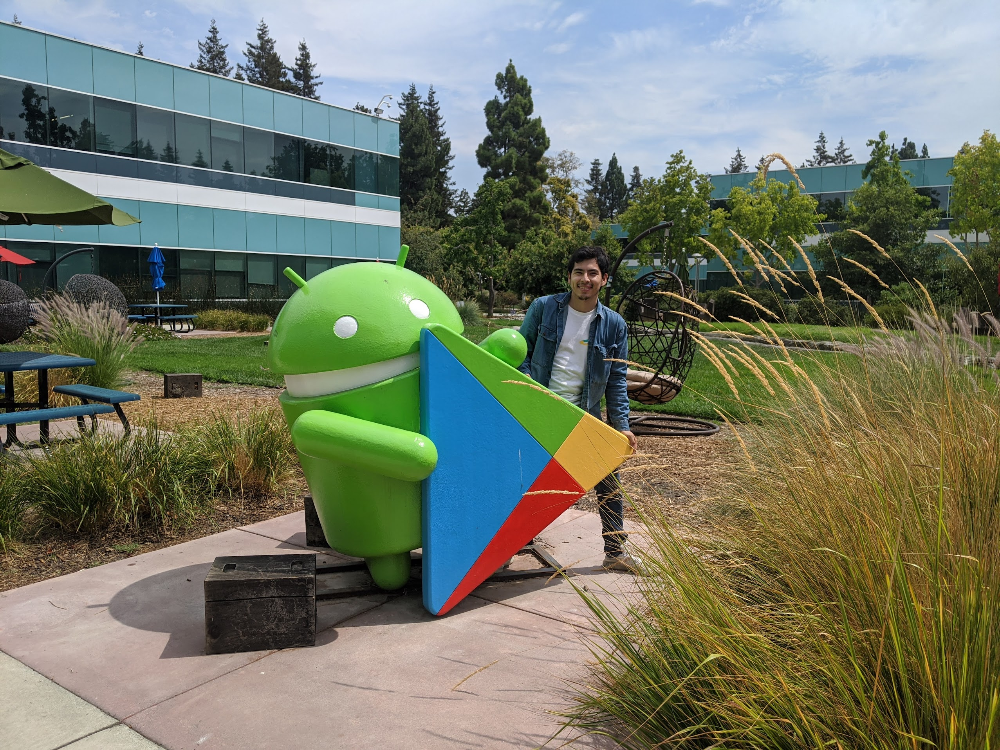
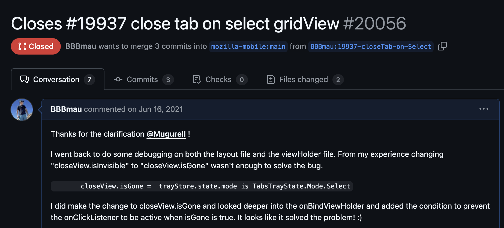

from android to kernel development
April 12th, 2025
Below is a picture of a young mau visiting the google campus for the first time, just a few months after starting both android development and my overal computer science journey back in December 2020.

Android development was my introduction to a lot of complex computer topics as well as design discussions. It led me to getting my first internship interview (although I failed miserably LOL). I've grown to appreciate well thoughtout architecture that goes into designing software while still trying to keep it simple.
Despite android giving me some wonderful moments and opportunities to test out new ideas, most notably with my recent project, I've decided that it's time to move on and leave android development behind entirely.
Unfortunately, like most engineers, time is very limited. Ideally I'd love to be able to tinker on every single peice of tech that catches my interest and in way was able to accomplish this early this year. However like all things the deeper you enter a topic the more time it asks from you. I started to get into very deep topics both as I started developing more android features as well as getting more and more into the development of the kernel (process management and scheduling to name a few).
At the end of the day, my goal is to have a deep understanding of computers and getting to play with the kernel would get me closer to that level of engineering.
With this sudden shift I'll be open sourcing both my realtime tour guide app along with the backend code that supports it. While I don't intend to continue working on it, ideally I'd like to get PRs opened from those interested in android development. I opened my first open-source PR on the firefox android repo and would like to provide feedback to those interested. Just like I was close to 5 years ago. (:

my final thoughts
I write this post on my way back from an IBM offsite. I found myself getting emotional whilst I reflected on my time since installing android studio back in 2020 to now.
The thought of being able to get situated in kernel development with the ability to explain it in a simplified manner is truly something that to me seemed so far out of my grasp 4.5 years ago. It has really been an amaziny journey and it's hard to believe I just graduated two years ago.
I hope this finds someone who has the same ambitions as me who is currently experiencing doubt. Oh, and the next post will be about kernel stuff. For reals this time! - mau